제1장. 서론
1.1 한국의 제조업 및 농기계 산업 현황
한국의 제조업은 전체 GDP에서 제조업 부가가치 비율이 26.6%로 2023년 기준 중국을 제외한다면 타 주요국(미국 10.6%, 독일 19.6%, 일본 22.4%, 이탈리아 14.4%, 영국 9.0%) 대비 가장 높은 수치를 나타내는 것을 확인할 수 있다[1]. 특히, GDP 중 제조업이 차지하는 비중은 1973년 OECD 평균을 앞선 이후, 꾸준히 성장 중이며, 1인당 제조업 부가가치는 전세계 6위(USD 10,329.64)를 차지한다(e나라지표, 2023). 또한 세계 제조업 경쟁력 지수 기준(CIP, 2022년 경제지표분석)에서 한국은 독일(0.42), 중국(0.37), 아일랜드(0.35)에 이어 4위(0.32)를 기록하였다(UNIDO, 2022). 이렇듯 타 산업에 비해 제조업 비중이 높은 나라이기 때문에 코로나 팬데믹 상황에서도 다른 주요 국가들과 비교해 경제적 손실이 작았으며, 팬데믹 경제위기(2021년) 기준 GDP 순위 OECD 통계 9위, IMF 통계 10 위에 오르는 저력을 발휘했다[2].
<그림1. GDP 대비 제조업 부가가치 비율> <그림2. 주요국 대비 CIP 순위 추이>
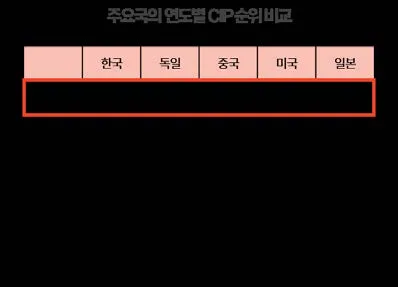
이와 같은 현황에서 우리나라 제조업의 생산성 성장은 중요한 의미를 갖는다.
예를 들어 기존의 업체들이 생산성을 제고하기도 하지만, 진입한 사업체의 생산성이 기존의 업체들의 생산성보다 높아 전체 경제의 생산성이 제고될 수도 있고, 이탈한 사업체의 생산성이 평균보다 낮아서 이탈 후 전체 경제의 생산성이제고될 수도 있다[1]. 따라서 제조업 업체들이 부문 내 생산성을 유지하고 혁신성을 발휘하여 대한민국 전체의 지표를 움직일 수 있다.
이러한 제조업 내 가장 비중이 높은 부문은 일반기계 산업인데, 제조업 중분류별 고용 비중(2022)을 보면 사업체 수 기준으로 일반기계 산업은 14.2%(1위), 종사자 수 기준으로 11.6%(2위, 34만6천여명)을 차지한다. 1970년대에는 일반기계 산업이 차지하는 종사자수가 2만 6천명으로 전체의 3.1% 수준이었으나 국내기계산업의 발전에 힘입어 2022년 약 14배 증가하였다[3].
<그림3. 제조업 내 기계산업 비중> <그림4. 기계산업 분류>
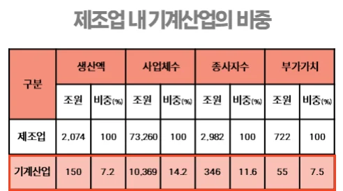
반면, 일반기계 산업에 포함되는 농기계 산업은 내수시장 및 수출시장 모두포함하여 5.98조 규모이다. 특히 내수는 기존 정부 융자지원 농업기계 매출액을근거로 추정한 2조 3천억원(2022년 추정)에 비해 1조 4천억원 정도 많게 나온 3조7250억원(2022년 기준)에 달해 CAGR 13.2%의 성장세를 보였으나, 그 규모는 여전히 제조업 전체 시장의 0.288%로 낮은 비중을 차지한다[4].
<그림5. 농기계 시장 규모> <그림6. 국내 농기계 내수시장 변화 추이>
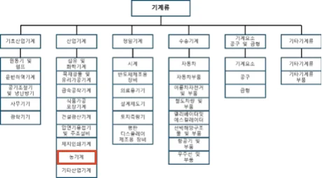
특히 한국은 식량자급률이 낮아 글로벌 식량위기에 상대적으로 더 취약하고, 농업인구의 고령화가 빠르게 진행되고 있으며, 밭농사의 기계화율이 낮아 (63.3%, 2022년)[5] 농업생산성이 낮으므로 농기계화율 제고가 필수적인 상황임에도, 내수시장 규모는 정체되고 있다.
<그림7. 식량 및 곡물자급률 추이> <그림8. 농업인구감소 및 고령화추이> <그림9. 논밭 기계화율 추이>
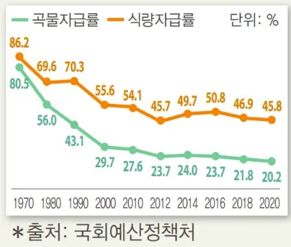
1.2 글로벌 농기계 산업 및 국내 농기계 산업 전망
이와는 대조적으로 글로벌 식량위기의 장기화 전망에 따라 글로벌 농기계 산업 시장은 지속적인 성장 추세에 있다. CAGR 5.7%로 USD 1,570억원(2021년)에달할 것으로 예상하고 있는데, 이는 한화 약 200조원에 해당하는 규모이다. 글로벌 농기계 산업이 지속적인 성장세를 보이고 있는 원인은 만성적인 기후변화, 세계인구 증가 및 러·우 전쟁 여파 등의 식량위기 장기화 전망으로 쌀, 밀, 옥수수, 콩 등 노지재배 식량작물의 생산에 활용되는 농기계 산업에 대한 관심이 세계적으로 증가한 것에 기인한다. 농기계 산업은 특히 제품 주기가 길고 기술 및자본 집약적이며, 다기종 소량생산의 특성으로 생산 규모의 경제가 매우 중요한산업이라는 특성에 따라, 미국·일본·영국 등의 선진국이 세계 농기계 시장을 주도하고 있다[6]. 글로벌 농기계 시장 점유율을 보면, 미국, 일본, 영국 등 선진국의 4대 기업(John Deere, KUBOTA, CNH, AGCO)이 전체 농기계 시장의 35% 이상을 차지하고 있다[7].
<그림10. 글로벌 농기계 산업시장 규모> <그림11. 글로벌 농기계 시장 기업 점유율>
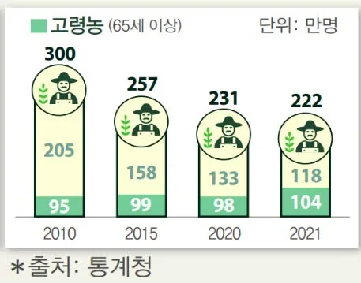
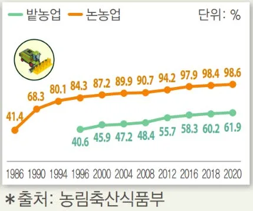
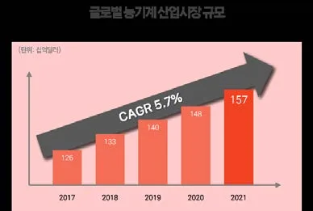
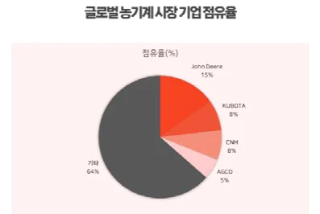

4대 기업이 점유하는 글로벌 농기계 시장과 대조적으로 국내 농기계 시장은국내 기업 3사가 과반수 이상을 차지하고 있다. 특히 세계 농기계 시장 점유율이 1.0%인 대동, TYM, LS, 아시아텍 4개사[8]가 국내 시장의 70%를 차지한다는측면에서[9], 국내 농기계 산업의 특수성은 두드러진다. 국내 농기계 시장은 2023년 내수 매출액을 기준으로 대동이 점유율 30.2%로 1위이며, LS엠트론 (16..2%), TYM(15.8%) 순으로 나타난다[9]. 1996년부터 2011년까지 공시된 사업보고서 기준으로 ㈜대동의 농기계 시장점유율은 지속적으로 상승하였으며, 창사이래 78년간 시장 점유율 1위를 유지하고 있다. 특히 ㈜대동은 2022년 기준 북미 중소형(100마력 이하) 트랙터 부문 BIG3 업체로 부상(점유율 8.8%) 하면서세계 시장 점유율을 확장 시켜 나가고 있다.
<그림12. 대동 국내 시장점유율>
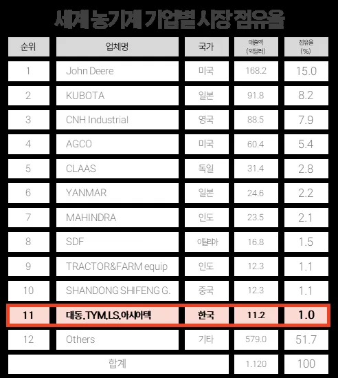
<표1. 세계 농기계 기업별 시장 점유율> <그림13. 대동 북미 시장점유율>
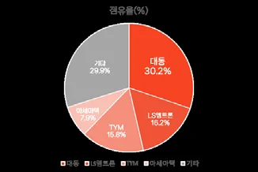
1.3 농기계 산업 내 국내기업의 중요성 및 한계점
그 동안 우리 나라 농업과 농촌의 사회·경제적 역할은 시대적 상황에 따라서계속 변해 왔다. 1960-70년대에는 비 농업부문의 자본형성 및 성장에 중요한 기
여를 했고, 1980년대에는 고용과 외환수지 유지에 크게 기여하였으며, 1990년대에는 식량안보와 자원보전 뿐만 아니라, 중·고령자들에게 고용의 장을 제공하는데 중요한 역할을 한 것으로 평가된다[10]. 그럼에도 불구하고 2022년 농업·농촌 국민의식 조사에 따르면, 한국의 농업 경영은 주된 위협을 받고 있는데, ‘농업 생산비 증가’(69.9%), ‘일손 부족’(49.8%), ‘기후변화에 따른 기상 이변과 재배여건 변화’(34.0%) 등인 것으로 나타났다[11].
이는 농업의 기계화를 통해 농업생산성을 높여야 한다는 중요성을 갖는다. 농업은 경제외적인 고유의 비교역적(Non-Trade Concerns, NTCs) 기능에 따라 환경보전, 식량안보, 식품안전성, 경제적 기능과 주로 농촌에서 생성되는 사회적 문화적 기능 보완에 대한 필요성을 갖는다. 이에 우리 농업은 과거 국제경쟁력은부족하지만 국가와 사회가 필요로 하는 비교역적 기능을 유지하기 위해 국가나사회가 지지하고 투자해야 하는 것으로 인식되어왔다[12]. 하지만 세계 농기계시장이 연평균 5.7%의 고도성장을 예견할 때, 우리 농기계 산업은 10년째 제자리이다. 이러한 차이는 선진 각국은 농업생산성을 높이기 위한 기술혁신을 거듭하며 IT 기반 복합제어기술을 적용한 고부가가치 첨단 농기계 개발을 통해 기술격차를 더욱 벌리고 있기 때문인데, 우리 국내 농기계 산업에 대한 시장잠식은 물론 기술종속마저 우려되고 있다.
1.4 연구방향 설정 및 연구모형(Research Questions)
국내 기업이 성공하기에 한계가 있는 산업과 시장 환경 속에서, 창업 이래 70여년이 지난 현재까지 국내 시장 점유율 1위를 유지하고, 글로벌 시장, 특히북미 시장에서 3위를 달성한 ㈜대동의 혁신사례는 연구 주제로서의 가치를 갖는다. 특히 태생적 한계가 분명한 농기계 시장의 국내기업 혁신사례 발굴의 의의를 갖는다. 또한 해당 기업의 성과는 GDP 대비 제조업 비중이 가장 높은 축에 속하는 제조업 중심국가인 한국의 중소·중견 기업들이 벤치마킹할 수 있는주요 혁신사례 연구로써 중요한 필요성을 갖는다. 이에 (주)대동의 혁신사례 연구 수행을 위한 Research Questions를 아래와 같이 도출하였다.
[Research Question]
1. 국내 최초 농기계 업체인 대동은 다른 기업들의 도전에도 불구하고 어떻게
국내 1위의 자리를 유지할 수 있었을까?
2. 기술 및 자본 집약적인 글로벌 농기계 시장에서 한국의 대동은 어떻게 북
미권 3위 점유율을 확보할 수 있었을까?
제2장. 사례연구 산업 및 대상기업
2.1 연구범위 설정
농기계 시장의 농기계(Agricultural machinery) 혹은 농업기계는 농림축산물의생산 및 생산 후 처리작업과 생산시설의 환경제어 및 자동화 등에 사용되는 기계설비 및 그 부속 기자재를 말한다(농업기계화촉진법, 제2조 1항). 이 범위에는농업용 트랙터(농기계 작업기를 장착하고 견인하는 기계), 콤바인(수확한 곡물을탈곡한 다음 자루나 통에 쏟아주는 농기계), 이앙기(모내기를 할 때 모판의 벼를 일정 간격으로 논바닥에 심는 농기계) 등의 완성차 뿐만 아니라, 베일러(트랙터 뒤에서 수확한 건초를 압축시키는 작업기), 스프레이어(방제기) 등의 작업기와 축산기계, 경운기계, 부품 등도 포함된다[6]. 하지만 본 연구에서는 2021년기준 시장규모가 가장 큰 트랙터 중심으로 농기계 시장을 분석하고자 한다. 또한 지역별 특성을 보았을 때, 중국과 인도가 속해 있는 아시아-태평양 지역이약 34%에 가까운 1위 시장이지만, 소규모 경작 중심이고 기계화율이 낮아, 세계 시장 2위인 북미 시장(26.3%) 중심으로 분석을 수행하고자 한다[8].
<표2. 기종별 세계 농업기계 시장 규모> <표3. 지역별 세계 농업기계 시장 규모>
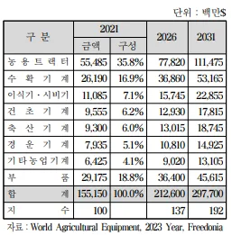
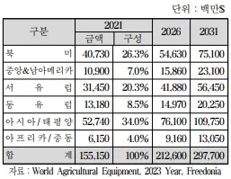
트랙터(Tractor)는 라틴어의 trahot(끌다)에서 유래되었는데, 견인, 끌기의 의미를 갖는 “Traction”과 자동차의 “Motor”가 합쳐진 단어이다. 이러한 트랙터는 빼놓을 수 없는 몇 가지 중요한 특징이 있다. 쟁기나 트레일러와 같은 물건을 끌고 주행하거나, 로터리 경운기나 풀 베는 기계 등에 동력을 공급할 수 있으며, 3 점 연결장치에 작업기를 연결하여 유압장치를 통해 작업기를 끌어올릴 수 있다.
농기계 역사상 트랙터의 등장은 농업의 기계화를 의미한다는 측면에서 식량의생산을 비약적으로 높일 수 있게 된다는 특징을 갖는다[13]. 트랙터는 사용 용도에 따라 Sub-compact, Compact, Utility, Agriculture 등으로 구분되며, 용도에따라 장착하는 트랜스미션, 작업기도 달라진다[14]. 마력에 따라 분류하는 경우에는 제조사에 따라 기준의 차이가 있으나, 일반적으로 100마력을 기준으로 100마력 이상은 대형 트랙터, 100마력 미만은 중소형으로 분류하며, 글로벌 기업별 중점 마력 상품이 상이하다[6]. 특히 John Deere, CNH, ARCO는 100마력이상의 수확용 트랙터 비중이 상당히 높으며, 100HP 미만 급에서는 자체 생산능력이 부족하여 상당량을 아시아 지역의 트랙터 제조업체로부터 OEM 형태로구매하여 유통시키고 있다. 100HP 미만 급에서는 일본의 KUBOTA가 높은 시장지위를 구축하고 있다[15]. 또 다른 분류 기준으로는 토양과 접하는 부분이 바퀴 또는 무한궤도인가에 따라 구분되며, 바퀴는 다시 이륜(경운기), 삼륜, 사륜으로 구분한다. 그리고 탑승 형태에 따라 보행형, 승용형, 무인형의 세 종류로도분류된다. 트랙터의 종류가 많으나, 혁신기업 사례연구의 면밀한 분석을 위해해당 연구 범위는 100HP 미만 농용 트랙터로 한정하여 수행하고자 한다.
2.2 연구대상기업 개요
(주)대동은 1947년 창사 이래, 78년째 국내 농기계 시장 1위를 유지하고 있는기업이다. 농업용기계(엔진포함)를 전문적으로 생산 및 판매하는 국내 농기계전문업체로, 농기계용 엔진 및 제품을 국내·외 영업소, 해외종속법인(미국, 캐나다, 중국, 유럽) 및 기타 해외거래처를 통하여 판매하고 있으며 그 주요제품은 트랙터, 콤바인 등으로 구성되어 있다. 회사의 상표는 수출의 경우 “KIOTI”와 내수의경우 “대동” 및 “DAEDONG”로 사용하고 있다[16].
해당 기업은 자동차 산업으로 사업을 확장할 수 있었던 유혹에도 불구하고, 나라의 발전과 성장을 위해 농업이 기초가 되어야 한다는 김삼만 초대회장의이념 하에, 농기계만을 위해 달려온 기업이다[17]. 1962년 업계 최초 동력경운기 (이륜형 트랙터) 제작, 1968년 업계 최초 농용 트랙터 제작, 1971년 업계 최초콤바인 생산, 1973년 업계 최초로 이앙기를 생산하여, 국내 농기계의 최초와 역사를 만들어 냈다. 이러한 역사 아래 해당 기업은 1994년 세계 최초로 엔진 조립공장을 완전 자동화했으며, 2006년에는 최첨단 엔진라인을 증설하고 자동화라인을 구비하여 안정된 품질의 농기계를 연 4만대가량 생산하고 있다. 2008년에는 농기계 업체는 최초로 ‘1억불 수출의 탑’을 수상하기도 했으며, 2021년 이후부터 3년 연속 안정적으로 매출 1조원을 달성하고 있다[19].
<그림14. 대동 매출 추이(1975~1995)(본인 작성)>
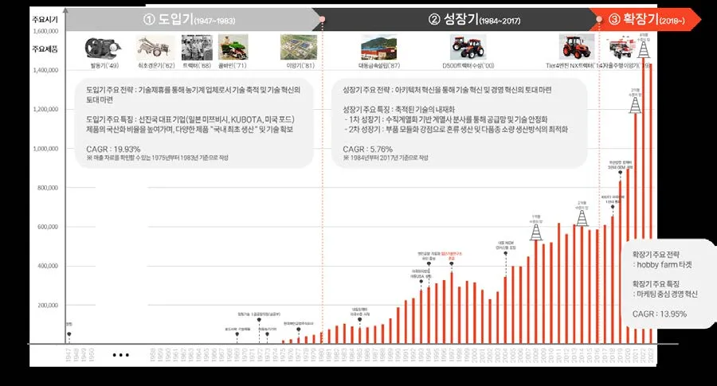
해당 기업의 매출에 따른 변곡점과 자체적인 혁신 내용을 기준으로, 기업의성장에 따른 주요 전략을 구분 지어 본다면, 선진기업과의 기술제휴를 통해 농기계 업체로서 기반을 마련하고 기술혁신의 토대를 다진 도입기(1947~1983),
아키텍처 혁신을 통한 성장기(1984~2017), Hobby Farm 시장의 성장에 기인한글로벌 시장에서의 폭발적 성장을 이룬 확장기(2018~)로 나눌 수 있다. 다만 앞서 연구범위를 한정한 것과 같이, 농기계 중 트랙터(경운기 포함)를 통한 혁신성장 요인에 대한 연구를 수행하고자 한다.
제3장. 이론적 배경
3.1 기회의 창과 기술추격이론
‘기회의 창(windows of opportunity)’의 개념은 Perez와 Soete(1988)에서 새로운기술경제 패러다임의 출현이 후발자에게 기회의 창이 될 수 있음을 간파한데서기원한 것인데, 몇 가지 기회의 창으로 구분할 수 있다. 첫째, 기술경제 패러다
임의 변화(Perez and Soete, 1988)이다. 새로운 패러다임 하에서는 선발자와 후발자에 상관없이 모두가 동등한 출발선에 선다는 점에서 후발자의 불리함이 덜하다. 둘째, 불황기와 수요조건의 변화이다. 선발자는 수익감소, 사업축소 등의 어려움을 겪지만 자원에 대한 경쟁이 완화되고 각종 요소가격이 저렴해지는 상황은 후발자에게 진입의 기회를 제공한다(Mathews, 2005/Lee and Mathews, 2012). 셋째, 정부규제, 법령, 산업정책의 변화이다. 인도의 제약산업에서 자국 기업들은 정부규제의 변화 속에 추격의 기반을 다질 수 있었고(Guennif and Ramani, 2012), 중국, 인도, 브라질, 한국의 통신장비 산업에서도 정부의 산업정책의 차이에 따라 자국의 기업이 추격에 성공하거나 실패하는 모습을 보였다(Lee, Mani and Mu, 2012). 정부는 다양한 규제와 후발자에 대한 직접적인 지원을 통해 선발자와 후발자에게 비대칭적인 환경을 조성함으로써 기회의 창을 열 수 있다
(Kim and Lee, 2008)[19].
정부규제, 법령, 산업정책의 변화에 따른 기회의 창은 추격 국가로서 기술 흐름에 해외 기술의 이전, 수입 기술의 확산, 수입 기술을 동화 및 개선하고 자체기술을 창출하기 위한 토착 R&D의 세 가지 주요 순서와 관련이 있다. 첫 번째단계는 외국인 직접 투자, 턴키 플랜트 및 기계 구매, 해외 라이선스 및 기술서비스와 같은 공식적인 메커니즘을 통해 해외로부터의 기술이전을 포함한다.
이러한 이전은 추격 국가의 기술 역량 확보를 용이하게 할 수 있다. 두 번째 단계는 수입된 기술이 산업 내 또는 산업 간에 효과적으로 확산되면서 경제의 기술 역량을 업그레이드하는 단계이다. 세 번째 단계는 수입 기술을 동화, 적응, 개선하여 궁극적으로 자체 기술을 개발하려는 현지의 노력이다. 이러한 노력은기술 이전을 확대하고, 기술 역량을 신속하게 확보하는 데 매우 중요하다. 특히경제 개발 초기에 기술력이 부족했던 한국은 해외 기술 수입에 의존할 수밖에없었는데, 제조업의 경우 1968년 발표된 일반 지침에 따라 수출을 촉진하거나, 자본재 산업의 중간재를 개발하거나, 다른 분야로 파급 효과를 가져오는 기술에우선순위를 부여하는 정책에 따라 정부는 초기 산업화 과정에서 발전적인 역할을 수행했음을 알 수 있다(Linsu Kim, 1997). 특히 개발도상국의 현지기업이 언제 외국 기술을 도입하고, 어떻게 수입기술을 도입하고 개선하여 경쟁력을 강화하는지 발전 단계 모델(시행-흡수-향상)을 제시하는데, 한국 전자 산업 기술의세 가지 두드러진 단계적 발전은, 한국 다른 제조업의 역사에도 적용이 가능하다(Linsu Kim, 1980)[20]. 또한 Jinjoo Lee, Zong-tae Bae, and Dong-kyu Choi(1988) 는 개발도상국에서의 산업 기술 발전 단계 모델을 제시하는데, 선진국에서의 기술 개발 단계는 신흥기술에서 신규기술, 성숙기술로 단위 기술 수준이 발전되는반면, 개발도상국에서는 선진국의 기술을 획득하고, 흡수하고, 발전시키는 3단계를 통해 기술을 발전시킨다[21].
<그림15. 발전단계모델(이진주 외, 1988)>
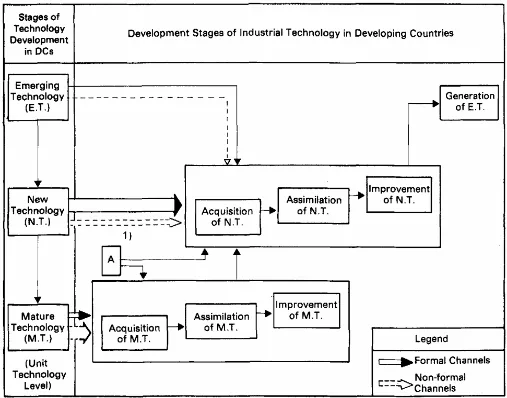
3.2 아키텍처 이론
일반적으로 생산현장에서 사람들이 무엇인가 새로운 제품이나 공정을 설계할때 제품에 따라 설계하는 사고방식이 달라지는데, 이런 제품 공정의 기본적인설계 사상을 아키텍처라고 한다(Fujioto, 2006). 이 때 제품 아키텍처(Product architecture)는 시스템의 기능적 요소를 구조적 요소에 연결하거나 시스템의 구조적 요소(구성 요소 또는 모듈)를 절단하여 연결하는 기본적인 설계 접근 방식을 의미한다(Langlois and Roberstson, 1992; Ulrich, 1995). 즉, 제품에 요구되는기능을 각 구조(부품)에 어떻게 배분하고, 부품 간 인터페이스를 어떻게 디자인할지에 대한 기본 설계 사상이라고 할 수 있는데, 제품 아키텍처는 크게 세 가지 요소로 나뉠 수 있다[22]. 첫째, 기능적 요소들의 배열, 둘째, 기능요소와 물리적 구성 요소(기능-구조)의 배열, 그리고 셋째, 상호 작용하는 물리적 구성 요소(구조-구조)의 배열이다(Ulrich, 1995)[23]. 이 때 제품 아키텍처의 유형은 기능구조 내의 기능요소와 제품의 구조 간에 일대일 매핑이 되는 경우 ‘모듈형 (modular)’ 아키텍처로, 기능요소와 제품의 구조 간에 복잡한(일대일이 아닌) 매핑이 포함되거나, 구성 요소 간의 인터페이스 결합된 형태를 나타낼 경우 ‘통합형(integral, 미세조정형)’ 아키텍처로 분류할 수 있다(Ulrich, 1995; Fine, 1998;
Baldwin and Clark, 2000; Fujimoto, 1999). 통합형은 미세조정을 통해 설계 및 제작되는 반면 모듈형은 부품들의 조합 및 조립을 기반으로 제작된다는 특징이있다.
<그림16. 모듈형 아키텍처의 예시(Ulrich, 1995)> <그림17. 통합형 아키텍처의 예시(Ulrich, 1995)>
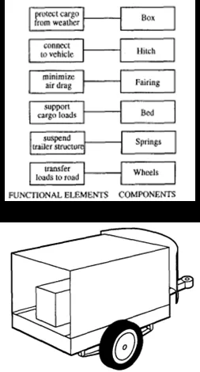
여기서 Takahiro Fujimoto 교수는 한 단계 더 나아가 “Architecture-Based Comparative Advantage-A design Information View of Manufacturing(2007)”에서제품-프로세스 아키텍처 간의 역동적 적합성이 산업의 국제 경쟁 우위를 가져온다는 가설을 바탕으로 아키텍처 기반 비교우위의 기본 개념을 제시한다. 특히제품의 모듈형-아키텍처 분류 분만 아니라, 구성 요소 간의 인터페이스가 표준화되어 서로 다른 회사 간에 공유되는지 또는 서로 다른 회사에서 개발한 구성요소의 믹스 앤 매치가 가능한지 여부에 따라 분류하는 또 다른 축이 존재한다.
개방형 아키텍처는 모듈형 아키텍처의 한 유형으로, 구성 요소 설계의 혼합 및일치가 기술적, 상업적으로 가능하며, 이는 회사 내부 뿐만 아니라 회사 간에도가능하다. 반면 폐쇄형 아키텍처는 독립적으로 설계된 구성 요소의 혼합 및 일치가 회사 내에서만 가능하며, 인터페이스 설계가 제품 내 에서가 아니라 회사내에서만 공통일 경우에 해당한다. 구성 요소의 세부 설계는 외부 공급업체에서수급할 수 있지만, 전체 시스템의 기본 설계는 한 회사 내에 포함된다. 이러한아키텍처 특성에 따라 모듈형-통합형 축과 개방형-폐쇄형 축을 결합하여 세 가지 기본적인 제품 아키텍처 유형을 식별할 수 있다: (1) 폐쇄-통합형, (2) 폐쇄-모
듈형, (3) 오픈-모듈형. 이에 Takahiro Fujimoto 교수의 아키텍처 포지션은 아래와같이 구분되며, 기업은 조직 능력과 시장 환경 구조에 맞게 적절한 전략적인 아키텍처 포지셔닝이 필요하다는 이론이다[24].
<그림18. 제품-프로세스 아키텍처 사분면(Takahiro Fujimoto, 2007)>
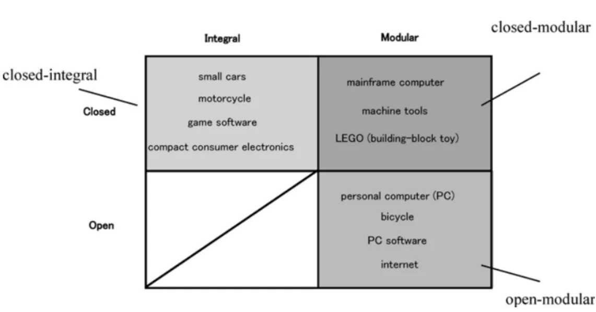
3.3 니치 마켓 전략(Niche market strategy)
“니치(틈새) 마케팅(Niche marketing)”은 “시장 세분화(maket segmentation)”, “타겟 마케팅(target marketing)”, “마이크로마케팅(micromarketing)”, “지역마케팅 (regional markeing)”, “집중마케팅(focused marketing or concentrated marketing)” 과 동의어로 사용되어 왔다(Dalgic and Leeus, 1994; Linneman and Stanton, 1992.). 그러나, 이 중 어느것과도 같지 않다고 볼 수 있다(Erin and Nancy, 2005). Dalgic와 Leeuw(1994, p. 40)는 Niche Marketing Revisited라는 논문에서 “니치 시장을 개별 고객 또는 유사한 특성이나 필요를 가진 소수의 고객 그룹으로 구성된 작은 시장으로 간주한다”고 설명한다. 또, Kotler(2003, p. 280)는 니치를 “특별한 이점을 추구하는 더 좁게 정의된 그룹”으로 정의하며, 니치 시장은 일반적으로 하나의 세그먼트를 다시 세분화하여 구성되며, 니치 마케팅의 핵심 문제는 전문화라고 주장한다. Michaelson(1988, p. 20)은 니치 마케팅을 “세그먼트 내에서 서비스를 제공할 수 있는 소수의 고객 그룹을 찾는 것”으로 정의한다. 특히 Kotler(2003)는 니치 시장의 다섯 가지 주요 특징을 다음과 같이 설명한다. (1) 니치 시장의 고객은 독특한 요구를 가지고 있다, (2) 고객은 자신의
요구를 가장 잘 충족시키는 기업에 프리미엄 가격을 지불할 의향이 있다, (3) 니치 시장은 경쟁자가 유입될 가능성이 낮다, (4) 니치 마케터는 전문화를 통해 일정한 규모의 경제를 얻을 수 있다, (5) 니치 시장은 크기, 이익, 성장 잠재력을갖추고 있다[25].
틈새 마케팅에 성공하기 위해서 지켜야 하는 주요한 특징에 대해 다양한 연구자들이 제시했는데, Dalgic과 Leeuw(1994)는 틈새 시장의 필수 요소를 포지셔닝, 수익성, 차별화된 역량, 소규모 시장, 시장 개념의 준수라고 정의했고, Kotler(1999, p. 28)는 시장 점유율이 높은 틈새 시장 성공요인은 고객에 대한 강한 헌신과 저렴한 가격보다는 우수한 성능, 신속한 서비스, 정시 납품, 최고 경영진이 주요 고객과 직접적이고 정기적으로 접촉하며 고객 가치 향상을 위한지속적인 혁신을 강조하는 것에서 비롯된다고 설명한다. 나중에 "높은 가치를제공하고, 프리미엄 가격을 부과하며, 낮은 제조 비용을 달성하고, 강력한 기업문화와 비전을 형성하는 경향이 있다"고 덧붙인다(Kotler, 2003, p. 271) 이러한 니치마켓 전략과 관련하여 자주 비교 및 언급되는 이론은 블루오션 전략(Blue Ocean Strategy)으로, 김위찬 교수와 르네 모보르뉴(Renee Mauborgne) 교수가 1997년 가치혁신 이론과 함께 발표한 개념이다. 기존 시장 경계 내에서경쟁사와 시장 점유율을 경쟁하는 레드오션(Red Ocean) 방식에서 발상의 전환을 통해 새로운 시장을 창출해야 한다는 전략을 의미한다. 여기에서 블루오션 (Blue Ocean)은 많은 경쟁자들로 가득한 레드오션과 상반된 개념이다. 레드오션의 특징은 기존 시장 경계 내에서 경쟁하며 이에 따라 경쟁의 성패가 존재하고기존 수요를 만족시키기 위해 노력하며 가치와 비용을 트레이드오프 관계로 인식한다. 이에 반해, 블루오션은 경쟁이 없는 새로운 시장을 창출하며 기존 경쟁과 관계없이 새로운 수요를 포착하여 가치와 비용 간 트레이드오프 관계를 탈피한다.
두 가지 이론의 가장 큰 차이점으로 니치마켓 전략은 기존 시장내에서의 경쟁을 감수하면서, 특정 소수 고객을 공략하는 것이지만 블루오션 전략은 경쟁을뛰어넘어 새로운 수요를 창출한다는 것이다. 기존 시장에 존재하지 않는 새로운고객층을 만들어 기존 경쟁자와의 경쟁을 피하는 것이 핵심이다. 특히 니치마켓전략은 작은 시장을 대상으로 하고, 블루오션 전략이 대규모 시장을 대상으로하고 있다는 점에서 전략 방향은 상이할 수 있다. 두 전략 모두 차별화가 중요하지만, 그 접근 방식과 목표가 다르다는 점에서 명확한 차이가 있다[26].
니치마켓 전략 블루오션 전략
시장 규모 작은 시장 대규모 시장
진입 시장 특정 고객 타겟 시장 새로운 시장 창출
전략 방향 특화된 솔루션 제공 차별화 및 저비용 동시 추구
경쟁 강도 경쟁 감수 소수고객 공략 경쟁이 불필요함
차별화의 방식 경쟁자가 제공하지 못하는 가치 혁신적 가치
예시 Rolex 고급시계, 왼손용 가위 Tesla 전기차, Apple 스마트폰
<표4. 니치마켓 전략과 블루오션 전략의 비교(본인 작성)>

제4장. 혁신전략 연구
앞서 언급한 바와 같이 ㈜대동의 성장은 선진기업과의 기술제휴를 기반으로기술 습득의 동태적 과정을 통한 기술혁신의 토대를 다진 도입기(1947~1983), 단계별 아키텍처 혁신을 통한 성장기(1984~2017), Hobby Farm 시장의 성장에기인한 글로벌 시장에서의 폭발적 성장이 두드러지는 확장기(2018)의 세 단계로 구분이 가능하다. 제3장에서 검토한 이론적 배경을 근거로, ㈜대동의 혁신요인에 대한 단계별 전략 사례를 검토해보고자 한다.
4-1. 기술 습득의 동태적 과정을 통한 기술혁신
4-1-1. (혁신전략 WHAT) 정책제도적 기회의 창을 통한 기술력 습득 기회 마련 Perez와 Soete(1988)의 기회의 창 이론에 따르면 후발 기업은 기술경제 패러다임 변화 시 진입 기회를 얻을 수 있다. ㈜대동은 정부의 정책 지원과 기술 제휴를 이러한 기회의 창으로 적극 활용하여 성공적으로 기술력을 축적했다.
정치적 안정과 함께 경제자립의 실현을 통치의 기본방향으로 내세운 군사정부는 기간산업과 사회 간접시설의 미비, 자금난 등으로 인한 민간 기업의 위축, 산업자본가와 기업가 계층의 미성숙, 시장구조의 낙후성, 각종 제도의 비효율성등 어려운 여건 속에서도 경제개발 계획을 추진했다[17]. 특히 제1차 경제개발 5개년 계획(1962년)과 제2차 경제개발 5개년 계획(1967년)은 농업에서 공업으로의 인력 이동을 가속화하면서, 농업 생산성 유지를 위한 농기계 산업의 육성과 국산화 필요성을 강조했다[23]. 당시 농기계는 대부분 정책 사업으로 보급되었기 때문에 정부의 농기계 구입 지원 규모에 따라 생산 기종과 수량이 변하였으며, 업체 간 치열한 판매 경쟁에 따른 가격 덤핑은 낮은 수익성으로 인해 기술 개발을 위한 투자를 어렵게 하였고, 선진국으로부터 기술 도입이 필요할 수밖에 없었다. 이에 ㈜대동은 1962년 일본의 미쓰비시 중공업으로부터 기술을도입하여 국내 최초로 1962년 경운기를 생산하였으며, 1969년에는 포드사의 기술을 도입하여 국내 최초로 트랙터를 생산하였다[17].
이후 정부는 농업기계화 5개년 계획을 수립하고 시행했는데(1972년~1976년), 이는 76년까지 이륜형 트랙터(이하, 경운기) 10만대를 보급시킨다는 계획이었다. 정부가 동력 경운기는 가격의 70% 융자지원에 5년 균등상환, 기타 기종은 50% 융자지원에 2~3년 균등상환 시행하여 정책적으로 지원을 아끼지 않았기 때문에 국내 농기계 업체, 특히 기술적으로 앞서 있던 ㈜대동은 시장 내 독점적 지위를 확보할 수 있었다. 1971년 기준, 동력 경운기(8HP)는 한 대에 36만원(정부지원 2.5만원/정부 융자 15.5만원)으로 농민 부담금은 절반 수준인 18만원(50%) 이었고 실제적으로 보급은 6천 2백대 수준이었다. 하지만 정책이 수립되고 시행 된 1972년 기준, 동력 경운기(8HP)는 한대에 32.5만원(정부 지원 없음/정부융자 22만7천원(70%))으로 가격이 떨어졌음에도, 정부 융자 제도의 활성화로 농민 부담금이 9만7천원(30%)으로 감액되면서 보급은 1만 2천대까지 두 배 가량증가하였다. 이를 계기로 ㈜대동은 앞선 기술력을 인정받아 1972년 석탄산업훈장과 정밀기술 1급 공장 사업체 지정의 성과도 얻을 수 있었다.
이후 1977년 「기계공업진흥법」을 근거로 농업기계 제조업체 지정 및 지원이이루어졌는데, 농업기계 전문화업체 지정제도 도입으로 종합형 농업기계 생산업체로 5개사(대동공업, 국제종합기계, 동양물산, 아세아종합, 현대양행)가 지정되면서 다양한 지원 혜택 및 기술 개발 자금의 설비 투자 자원으로 생산 역량을강화할 수 있었다. 국내 농업기계 산업을 보호하고 육성하는 효과로 한국의 농기계 산업에 대한 일본의 농기계 산업 의존도를 줄이고 경쟁력 및 시장점유율을 높일 수 있었다.
1978년에는 「농업기계화촉진법」이 제정되면서 수도작의 기계화 필요성 증대를 실감할 수 있었는데, 저금리에 의한 농기계구입 자금을 농가에 융자해주며, 농기계 생산부터 사후 A/S까지 통제하는 정책을 시행하였다. 특히 1978년 이앙기, 바인더, 콤바인 등의 농기계도 보급되기 시작했는데, 중대형 농기계에 대한기계화 사업의 꾸준한 추진과 확대를 장려하였다. 정부의 적극적인 농기계 사업정책에 발맞추어, ㈜대동은 경운기의 핵심 부품인 전동용 체인을 위한 한국체인공업(1977년)을 설립하여, 정부로부터 중소기업 전문 기계공장 지정을 통한 농기계 부품 생산을 인정받았다[27].
4-1-2. (혁신전략 HOW) 선진기업 기술제휴 기반 국산화 중심 기술력 습득
경제개발 5개년 계획이 시작된 1962년 ㈜대동은 공장이전 이후 농기구의 근대화를 위해 집중하였다. 회사 이름을 대동공업사에서 대동공업주식회사로 변경하고, 정부의 경제시책에 앞장설 다짐을 굳건히 하는 계기를 만들었다. 1962년미쓰비시 사와의 기술제휴를 통해 경운기를 생산하기로 방침을 확정한 후 대동은 곧바로 일본 미쓰비시 사로부터 경운기 1대를 도입해 분해 작업에 들어갔다. 분해와 함께 자체 시설로 생산 가능한 부품과 도입해야 할 부품을 가려내고점진적인 모방을 통해 국산화에 성공했다.
최초 기술제휴를 할 때 발견한 문제점은 기술제휴라고 해서 선진국의 회사들이 모든 것을 다 가르쳐 주는 것은 아니라는 것이었다. 특히 상대회사가 그 분야에 관한 모든 특허를 갖추고 있지 못하기 때문에 국산화 비율을 높여 완전국산화하기 위해서는 독자적인 연구가 필요했다. 앞선 선진국 기술의 비밀을 대동 스스로 파헤쳐 대동의 기술로 만들었는데, 미묘한 부분은 가르쳐주지 않았기에 암묵지적인 지식으로 노하우를 쌓아 나갔다. 최초 경운기를 만들었던 1963 년에는 엔진을 비롯해서 거의 모든 부분품을 그대로 수입해 조립하고, 판금 같은 일부 손쉬운 부품만 직접 만들었다. 특히 1천5백개의 부품으로 만들어지는경운기의 모든 부품을 제작할 수 있는 능력은 갖추고 있었으나, 양산이 가능했던 판금부분 기준 국산화 비율은 30% 수준이었다. 미쓰비시 중공업과 생산 첫해에 30%의 국산화비율로 150대의 경운기를 생산하되, 다음해부터 매년 10%씩국산화비율을 높여 가기로 합의하였으며 이때의 생산량은 300대 이상의 조건으로 기술제휴를 체결하였다. 이에 판금 분야에서 시작했던 국산화가 주조와 기계가공 분야로 확대돼 1970년에는 65%를 국산화하였으며, 1972년에는 국산화 비율이 85%에 달했으며, 1980년에는 국산화 비율 100%를 달성할 수 있었다[17]. 1965년에는 농기계의 대형화를 추진했는데, 서구의 대단위 농업의 주력 농기계인 트랙터를 대상에 올렸다. 정부에서는 경운기 보급이 시작단계에 지나지 않은 시점에서 트랙터를 생산하는 것은 불합리하다는 우려 하에 차관신청을 받아주지 않았으나, (주)대동 김삼만 회장은 미국의 포드와 기술제휴를 추진했다.
1969년 8월 포드와 기술 제휴 계약에 조인하게 되었고, 포드가 대동의 트랙터생산을 뒷받침해주고 500대를 공급한 이후에 1~3%의 로열티를 받는다는 조건이었다. 1969년 11월 처음으로 생산된 11대의 트랙터는 47마력짜리로, 20%의국산화로 이루어졌으며, 나머지 80%의 부품은 영국에 소재한 포드의 자회사로부터 들여왔다. 엔진에서 차체와 전기계통에 이르기까지 고도의 기술과 시설이요청되는 생산공정 가운데 1982년까지 약 40%의 국산화를 이룩했으며, 그 당시 국산화가 이루어지지 않은 부분은 엔진·변속기·하우징·작업기 등이었다. 한편 1976년에는 22마력 소형 트랙터를 자체 기술로 개발하기로 하고 일본 구보다
와 기술제휴를 맺어 생산을 개시했다. 1980년에 30%의 국산화 비율로 125대를생산했으며, 우리나라 농촌 여건으로 보아 대형 트랙터보다는 소형이 보다 용이하다는 실용성을 바탕으로 1983년에는 100% 국산화를 이루게 되었다[17].
4-1-3. (혁신전략 결과) 기술 획득-흡수-발전을 통한 기술혁신 역량 구축기회의 창을 활용하여 동태적 과정을 통한 기술 획득을 이루어 낸 ㈜대동은기술 획득-흡수-발전의 과정을 거쳐 기술혁신의 역량을 획득했다고 볼 수 있다.
또한 해당 단계를 학습함으로써 스스로 기술 발전의 경로도 구축해냈다고 평가할 수 있다. 일본의 성숙기술(Mature Technology: M.T.)을 획득하여 복제하던 경운기는 1980년에 이르러서야 100% 국산화를 완료할 수 있었는데, 경운기의 1,500개나 되는 부품을 완전히 국산화해낸다는 것은 보통의 시설과 보통의 기술로는 달성하기 힘든 일이었다. 특히 경운기의 크기는 작지만 생산과정은 매우복잡해 단일기계 시설로는 달성하기 힘들며, 종합기계 시설을 요하는데, 이에대해 대동이 과감한 투자와 기술력을 꾸준히 배양해 나간 결과, 농기계 시장점유율 1위(경운기 분야 90%)를 달성할 수 있었다. 이러한 성장은 매출로도 확인할 수 있는데, 1967년에는 매출액이 6억 5,932만원을 기록하여 1961년에 비해 4.2배 신장했으며, 1968년에는 9억 7,915만원으로 6.4배, 1970년에는 12억 8,914 만원으로 8.5배의 급성장을 보였다.
<그림19. 대동의 기술 획득-흡수-발전 도식화(본인 작성)>
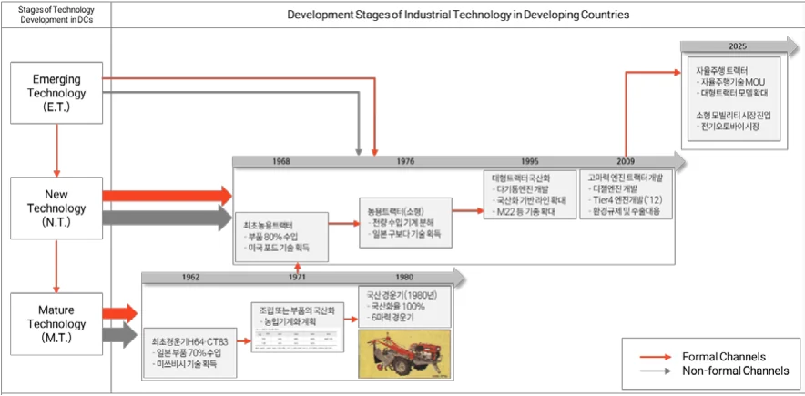
동시에 신규기술(New Technology: N.T.)도 획득하고 흡수하고 발전시켜 나가는과정을 통해 트랙터 제조 역량을 확보할 수 있었다. 이러한 혁신의 결과는 현재까지도 기업 내부 지식으로 쌓여, 계속적인 기술 혁신을 이루어 나가고 있다.
특히 이 때 집중했던 제품은 엔진류가 대부분이었는데, 각종 엔진을 국산화함으
로써 농기구의 동력화 기반을 완전히 굳힐 수 있었다. 특히 소형 농기구의 동력화에 핵심인 공랭 엔진은 그 기여도가 더욱 높았다고 볼 수 있으며, 이는 현재의 엔진 개발 역량 단초가 될 수 있었다.
선진 기술 흡수의 결과는 특허 분석(<그림20>)을 통해서도 확인할 수 있다.
위즈도메인을 기준으로 출원인 (대동/LS엠트론/TYM), 발명의 명칭+청구항 (Tractor/Engine)에 대한 특허를 검색하여, 인용문헌이 US, JP인 특허의 수를 년도 별로 정리하면 다음과 같다. 대동이 2015년도까지 3사 중 선진 기술 인용특허의 수가 제일 많았으며, 2016년부터 LS엠트론의 선진 기술 인용 특허 수가앞서기 시작함을 알 수 있다. 전체 특허 수를 기준으로 볼 때 대동 248, LS엠트론 320, TYM 49개로 LS엠트론이 가장 많으나, 길목특허(인용, 피인용 5 이상으로 정의)의 수를 기준으로 볼 때, 대동 24, LS엠트론 15, TYM 4개로 대동이 2010 년대 중반까지 선진 기술을 흡수하여 국내로 많은 전파를 하였음을 짐작할 수있다.
<그림20. 국내 트랙터 제조 3사의 해외특허 인용 수(년도 별, 본인작성)>
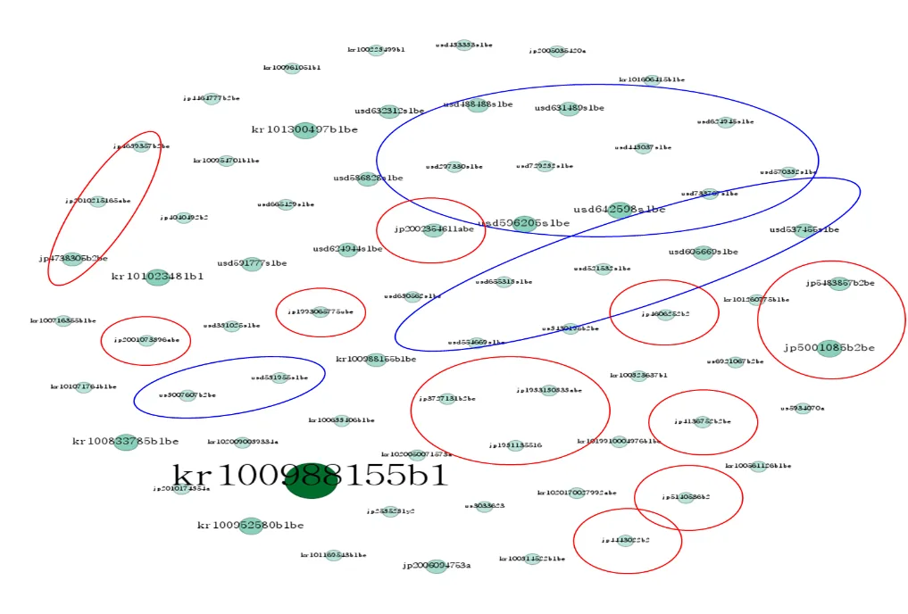
대동의 특허에 집중하여 살펴보면, 대동 특허들이 인용한 특허들 중 피인용수 3회 이상의 특허들 기준으로, 아래의 <그림21>과 같이 대부분이 US, JP 특허임을 확인할 수 있다.(KR 특허는 대부분 대동 특허 내부 인용)
<그림21. 대동이 인용한 특허들 (피인용수 3이상, 본인작성)>
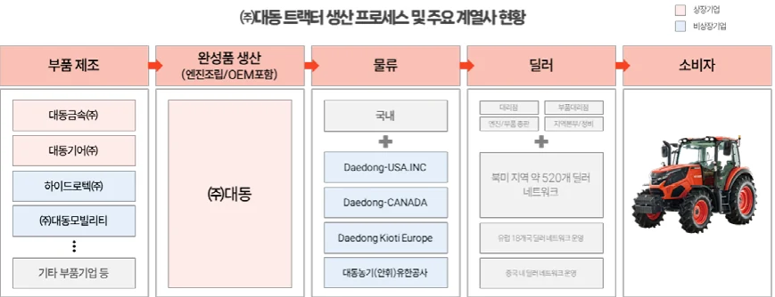
4.2 아키텍처 혁신 전략① – 수직계열화 중심 공급망 및 기술 안정화
4-2-1. (혁신전략 WHAT) 수직계열화 전략 중심 계열사 설립
농기계는 자동차 산업처럼 다양한 부속품의 결합으로 이루어지는 고도의 조율형(integral) 아키텍처를 가진 기계제품이다. 많은 부품과 협력사가 필요한 만큼, 기술 축적 부족, 생산 공정의 불균형, 작업 지연 등으로 인해 품질 관리에많은 문제가 발생할 수 있다. 이를 해결하기 위해 대동은 농기계 생산에 필요한핵심 부품을 독립적인 계열사에서 생산하도록 수직계열화 전략을 채택하였다.
이 전략은 부품 및 공급망의 안정성을 확보함과 동시에 조율형 아키텍처의 효율성을 극대화하는 데 기여하였다.
1) 대동기어
대동기어는 초기 국내 생산이 어려웠던 정밀 기어와 전동축류를 전문적
으로 생산하기 위해 설립되었다. 대동공업의 치차과에서 분리되어 각종
기어가공 전용기 및 공작기계를 도입해, 대동의 경운기용 기어를 생산
하다가, 1988년에는 농업용 기계의 트랜스미션 조합(트랙터, 콤바인 등)
을 개발하며 농기계뿐만 아니라 자동차 및 산업 기계 분야로도 기술을
확장하였다[28].
2) 대동모빌리티
대동모빌리티는 국내에서 수입에 의존하던 전동용 롤러 체인의 국산화
를 위해 설립되었다. 특히 경운기에 쓰이는 전동용 롤러 체인은 국내
수요가 적어 국산화가 어려웠으나, 대동이 국내 수요에 대응한다는 전
략으로 일본 풀톤체인과 기술 협력 계약을 통해 체인 생산 기술을 도입
하고, 체인기어, 컨베이어 장치, 감속기, 변속기 등 체인과 연관되는 부
가가치 높은 제품 개발로 사업을 확장하였다[29].
3) 대동금속
1947년 주조부로 시작한 대동금속은 국내 최초로 디젤엔진용 실린더
블록과 실린더 헤드의 양산에 성공하며 농기계와 자동차 정밀 부품 생
산을 선도하였다. 특히 트랙터에 필요한 실린더헤드, 실린더 블록, 유압
실린더, 클러치 하우징, 트랜스미션 케이스를 납품 중이며, IATF16949 인
증을 획득하며 품질 관리 체계 또한 강화하였다[30].
4) 하이드로텍
2003년에 설립된 하이드로텍은, (주)대동이 하이드로텍 주식 100% 보
유하고 있는 회사이며 주요 매출은 (주)대동과 대동기어(주)를 통해서
발생한다. 농기계용 유압부품 기술을 기반으로 농기계의 완성도를 높이
는 데 기여하고 있다[31].
대동은 수직계열화를 통해 각 계열사의 기술 역량을 강화하고, 핵심 부품을전문 계열사와 공동으로 개발 및 생산함으로써 부품 및 공급망의 안정성을 확보하고, (주)대동은 완성차에 집중하여 트랙터 완성도를 극대화시킬 수 있는 전략을 추구했다. 즉, 농기계 산업의 폐쇄형-인테그럴 구조에서 경쟁력을 강화할수 있는 기술적, 생산적 토대를 마련하였다.
<그림22. 대동 트랙터 생산 프로세스 및 주요 계열사 현황(본인 작성)>
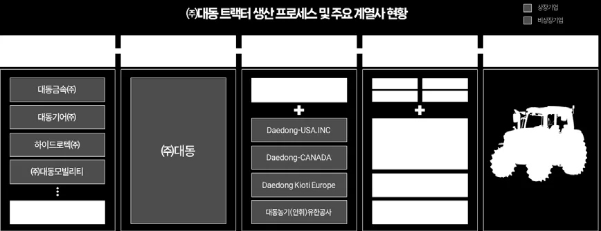
4-2-2. (혁신전략 HOW) 수직계열화 중심 계열사별 연구개발 역량 강화
대동은 수직계열화를 통해 농기계 생산과 관련된 계열사별 역할을 명확히 하고, 독립적 연구개발 역량을 강화하면서도 상호 연계된 기술 생태계를 구축하였다. 이는 실제 계열사 별 별개의 연구개발 및 특허권 확보 진행 결과를 통해 세부 내용을 확인할 수 있다.
1) 대동기어
대동기어는 고정밀 기술개발을 위해 별도의 기술연구소를 2005년 6월
설립운영하고 있으며, 별도의 연구개발 담당조직을 구성하고 있다.
<그림23. 연구개발 담당조직(대동기어, DART 사업보고서, 2023.12. 재구성)>
특히 기어 및 동력전달장치에 연구개발에 집중한 결과, 트랙터 미션 및
자동차·모빌리티 감속기 및 기어류에 대한 연구개발실적을 바탕으로, 제
품 라인을 강화하게 되었다. 특히 트랙터 변속기는 수행할 작업이나 견
인부하에 따라 작업 속도를 효과적으로 조절할 수 있도록 광범위한 속
도비를 가져야 하는데, 이에 대동기어는 다양한 종류의 변속 장치를 개
발 및 적용하고 있다.
■ 대표 연구개발실적
과제명 내용
TG300L 트랙터 개발 TG 파워시프트 미션조합 개발(95~125HP급)
TF200 트랙터 개발 60~75마력대 트랙터 개발(내수, 수출)
LSM MT8 트랙터 개발 100kW급 DCT 밋션조합 개발(듀얼클러시 미션조합) TE170 트랙터 개발 북미 저가형 트랙터 개발(45HP-60HP 급, 기계식 미션조합) 현대트랜시스 전기차 파킹기어 개발 전기차용 파킹기어 개발(MV(EV7), ME(아이오닉7) 적용)
<표5. 대표 연구개발 실적(대동기어, DART 사업보고서, 2023.12. 재구성)>
■ 대표 특허
<표6. 대표 특허(대동기어, DART 사업보고서, 2023.12. 재구성)>
2) 대동모빌리티
대동모빌리티는 농기계사업, 농용작업기 및 산업용 롤러체인 기존 사업
부문과 관련한 신기술 및 신제품 제발로 기업경쟁력을 강화하고 있다.
특히 대동모빌리티는 체인업계 최초로 산업통상자원부로부터 품질관리
선도기업으로 선정되어 체인업계를 선도하고 있으며, 동력전달을 위해
정교한 가공 및 조립 등이 필요함에 따라, 다양한 연구개발실적을 기반
으로 기술 개발을 추진하고 있다.
<표7. (주)대동모빌리티 기술연구소(대동모빌리티, DART 사업보고서, 2023.12. 재구성)>
■ 대표 연구개발실적과제명 내용
(05. 09.) 무급유 체인 개발 무급유 체인 개발
(16. 04.) 선박체인 개발 선박체인 개발
(17. 09.) KL2510로더 개발 CK2510용 로더 개발로 매출 증대
(11. 05.) TB200 트럭터용 모어 개발 미국 및 유럽 수출용 미드마운트 모어 개발을 통한 매출 증대 … …
<표8. 대표 연구개발 실적(대동모빌리티, DART 사업보고서, 2023.12. 재구성)>
3) 대동금속
대동금속이 집중하고 있는 주물제조업은 대규모의 장치산업으로 막대
한 시설투자 및 고도의 축척된 기술이 동반되어야 한다. 또한 부품 자체
의 개발에 상당한 시간이 필요하여 상호간의 경쟁이 타 업종에 비해 적
은 편이다.
<표9. (주)대동금속 연구개발활동조직(대동금속, DART 사업보고서, 2023.12. 재구성)>
농기계부품으로 시작하였으나 기술 개발에 힘입어 특히 고기술(주물품
종 최고기술)을 요하는 자동차용 실린더헤드와 실린더블록의 생산기술력
을 인정받아 현대자동차에 실린더헤드류를 단독 납품하고 있다. 현재 대
동금속의 주물 제품은 농기계부품 20%, 자동차부품외 80%의 매출 비중
(2023년 기준)을 확보 하고 있다.
■ 대표 연구개발실적기간 내용
2013년 4월 쌍용자동차 실린더블럭 2종 개발 완료
2015년 3월 (주)대동 밋션케이스 외 1종 개발 완료
2015년 9월 기아자동차 R-ENG 실린더블럭 개발 완료
2017년 12월 KMT 유압실린더 1종 개발 완료
2021년 1월 (주)대동 실릴린더블록 외 2종 개발 완료
… …
<표10. 대표 연구개발 실적(대동금속, DART 사업보고서, 2023.12. 재구성)>
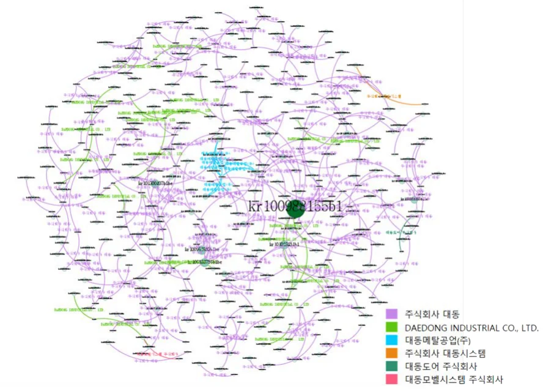
4) 하이드로텍
하이드로텍은 농기계의 유압 부품을 전문적으로 제조하며, 농기계용 밸
브류 및 트랙터용 조이스틱 밸브를 국산화하였다. 특히 농기계뿐만 아니
라 건설기계, 선박 등의 유압 제품으로 사업 영역을 확장하였다. 국산화
된 유압 밸브 개발과 기술력 축적을 통해 국내외 시장에서 경쟁력을 확
보하였다.
5) (주)대동
대동은 엔진의 기술 내재화 및 트랙터 개발에 집중하고 있다. 트랙터의
완성도를 높이기 위해 엔진과 농기계 완성품 조립에 역량을 집중함으로
써 엔진의 기술 내재화 및 대동 트랙터의 품질 경쟁력을 강화하는 중요
한 기반이 되었다. 결과적으로, 대동의 계열사별 독립적 연구개발 역량
강화와 통합적 협력 구조는 농기계 산업에서 기술적, 경제적 성과로 이
어졌다.
(주)대동의 연구개발조직은 연구개발 조직은 3개본부(Product개발본부,
플랫폼사업본부, 스마트파밍사업본부), 1개실(미래기술실), 11개팀, 2개센터
로 구성되어 있으며 차후 농기계시장을 선점하기 위한 기술개발에 진력
하고 있다. 직원의 15% 이상이 연구개발인력이며, 연구개발비는 매출액
대비 2% 수준을 유지하고 있다.
■ 대표 연구개발실적연구개발시기 내용
국내최초 Tier4 엔진 개발(2012) Tier4 엔진 개발, Tier4 엔진 탑재 개발(2016) EJ SERIES 양산엔진개발
국내 경제형 트랙터 개발 30~40마력대 모델 및 개빈 모델 라인업 추가(가격경쟁력확보) 유럽 StageⅤ 트랙터 개발 유럽 배기가스 규제 (StageⅤ) 대응(TD200, TD210, TF120) … …
<표11. 대표 연구개발 실적(대동, DART 사업보고서, 2023.12. 재구성)>
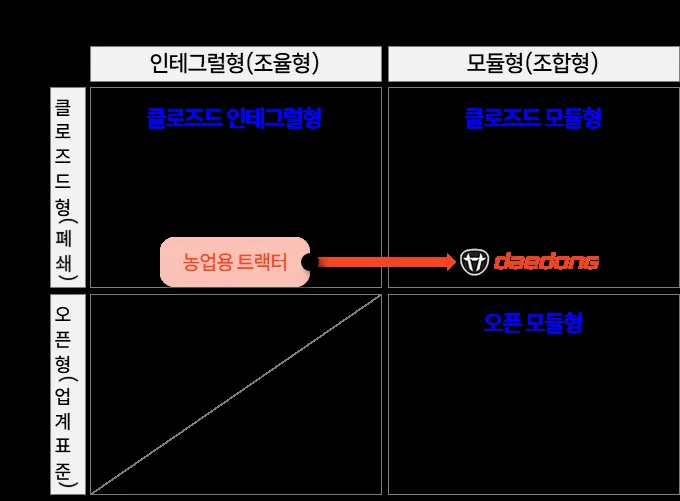
■ 대표 특허(발췌본, 2023년 당사 중요 특허권 현황 16개)
<표12. 대표 특허(대동, DART 사업보고서, 2023.12. 재구성)>
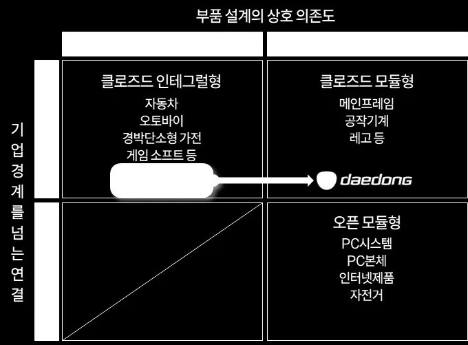
수직계열화는 설계 및 생산 과정에서 변화가 발생하더라도 전체 시스템에 미치는 영향을 최소화하고 유연성을 확보할 수 있게 하였다. 계열사들은 자체 연구개발 역량을 통해 새로운 부품 설계나 기존 부품 개선에 능동적으로 대응하였으며, 생산 효율성과 품질 안정성을 유지할 수 있었다. 또한, 특정 부품 수요증가나 새로운 시장 기회가 생길 경우, 계열사별 생산 능력을 신속히 확장하여시장 요구에 대응할 수 있었다. 즉, 대동은 계열사 설립을 통해 조율형 산업의특징을 갖는 농업용 트랙터의 완성도를 높이는 방향으로 발전했다.
4-2-3. (혁신전략 결과) 경쟁사대비 빠른 기술발전 속도 및 역량중심 사업 전개대동의 수직계열화 전략은 국내 경쟁사와 비교했을 때 기술적 우위를 선명히보여준다. 연구개발 및 특허 활동 시점에서 대동은 2000년대 초반에 집중적으로 특허를 출원하며 기술 선점을 이뤘다. 반면, 경쟁사인 LS엠트론은 2010년대초반에 특허 출원이 집중되어 대동과의 기술적 시점 차이가 드러났다. 이를 통해 대동은 농기계 핵심 기술 축적에서 경쟁사를 앞서는 데 성공하였다.
또한 대동의 사업 전개 방식은 경쟁사와 명확히 구분된다. 대동은 수직계열화를 통해 농기계 생산 프로세스에 적합한 계열사를 설립하고, 각 계열사가 핵심부품 개발과 생산에 집중하도록 분업 구조를 설계하였다. 이는 부품 생산과 완성차 생산 간의 통합적 관리와 최적화를 가능하게 하여 농기계의 품질과 생산성을 크게 향상시켰다. 이에 각 계열사들은 농기계에서의 기술개발 역량을 바탕으로 전방 산업의 선두 기업(현대자동차, 현대건설기계 등)을 고객사로 보유하고 있으며, 모기업 대동을 포함한 글로벌 농기계 기업 등의 납품을 통한 지속적인 수주로 안정적인 매출을 확보하고 있다.
반면, LS엠트론이나 TYM도 일부 수직계열화를 하고 있으나, 대동처럼 전방위적인 농기계 부품을 수직계열화한 것과는 다소 차이가 있다. LS엠트론은 주요부품을 및 특정 핵심 부품과 기술 역량을 내부화하는 데 집중하고 있으며, 그룹내 계열사를 통해 부분적인 수직계열화를 추진하는 형태를 보인다. 또한 농기계뿐만 아니라 사출성형기, 전기부품 등 다양한 산업군으로 영역을 확장하였다.
TYM도 농기계 부문에서 주요 부품의 자체 생산을 통해 수직계열화를 일부 추진하고 있다. 동시에 주로 R&D와 제품 개발에 강점을 두고 있으며, 일부 부품의 내재화를 통한 생산 효율성을 높이고 있다. TYM은 현재 농기계와 직접적으로 연관되지 않은 필터 산업으로 계열사를 확장하며 사업 포트폴리오를 다각화하였지만, 이는 농기계 전문성 강화보다는 시장 리스크 분산에 초점을 둔 전략으로 보인다.
구분 주요재화/용역 사업내용 구분 구체적용도 사업내용농업, 레저산업 등에 활용 트랙터, 콤바인, 이앙기 등농기계트랙터 되는 농기계 등 제품생산, 농업용기계 TYM 트랙터로 판매중이며, 사업부판매 매출비율 90.9%
기계 플라스틱 성형제품 제작 탄소복합필터, 아세테이트사출성형기 필터사출성형기 제작 판매 담배필터 필터 등을 판매중이며, 사업부방위산업 관련 제품 생산, 매출비율 9.1%
방위사업(궤도)
판매 기타 자율주행휴대폰 및 디스플레이용 사업부 관련기술
부품 전자부품 커넥터와 안테나 등을 생연결회사는 전략적인 영업단위인 3개의 부문을 바탕으산 판매로, 다른 기술 및 마케팅 전략 수행 중
<표13. LS엠트론 사업 구조(2024.6. DART)> <표14. TYM 사업 구조((2024.6. DART)>
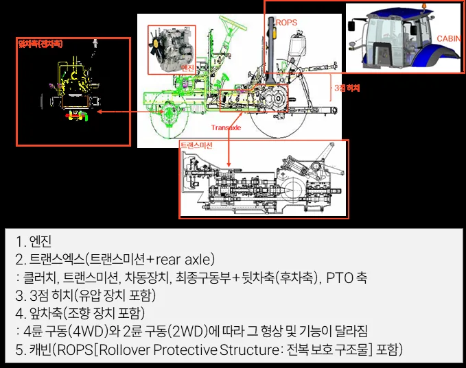
대동의 수직계열화는 이러한 경쟁사들과 차별화된 방식으로 농기계 산업에서의 우위를 확보하였다. 이는 대동 트랙터와 농기계 제품의 품질 완성도와 시장경쟁력을 강화하는 데 기여하였으며, 수출 실적과 매출 성장을 통해 경제적 성과로 연결되었다. 결론적으로, 대동의 연구개발 중심 전략과 수직계열화를 통한사업 전개 방식은 경쟁사 대비 빠른 기술발전 속도와 차별화된 성과를 만들어내는 주요 요인이 되었다.
대동의 트랙터 특허들을 네트워크 분석해보면 아래의 그림과 같이 대동 계열사 간의 공동 특허 출원도 상당히 많은 것을 확인할 수 있다. 계열사 간 네트워크 분석 결과, 각 계열사가 독립적으로 운영되면서도 대동의 완성차 생산 목표를 중심으로 긴밀히 협력하고 있음을 보여주었다. 이를 통해 계열사 간 조율성과 시스템 통합이 강화되었으며, 농기계라는 복합 시스템의 특성을 효과적으로지원할 수 있었다.
<그림24. 대동의 트랙터 특허 네트워크 분석(본인 작성)>
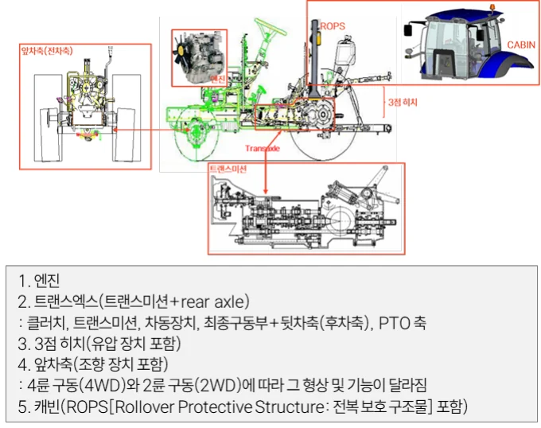
4.3 아키텍처 혁신 전략② – 통합형에서 모듈형으로 아키텍처 혁신 전략
4-3-1. (혁신전략 WHAT) 모듈러 아키텍처 전략
대동은 트랙터 개발 초기 폐쇄-통합형(closed Integral) 아키텍처를 기반으로한 제품 구조를 설계하였으나, 점차 구조를 모듈화하여 폐쇄-모듈형(closed Modular) 아키텍처로 전환하였다. 수직계열화를 기반으로 아키텍처 전환까지이어지는 변화는 농기계 산업 내 제품 아키텍처 혁신의 대표적인 사례로 평가할 수 있다.
<그림25. 대동 제품 아키텍처 변화 전략 (Takahiro Fujimoto 재구성하여 본인 작성)>
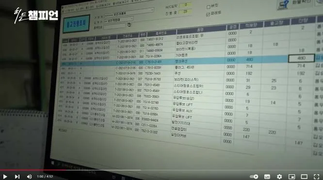
농기계 산업은 고도의 기술 안정성과 품질 완성도를 요구하는 동시에, 농업특성 상 해당 제품을 필요로 하는 적기에 여러 제품과 기종을 원하기 때문에다양한 제품군과 소량생산의 특성을 갖는다. 최초 대동은 수직계열화를 통해 안정적인 공급망을 구축하였으나, 계열사별 기술역량 개발 강화로 점차 제품 구조를 모듈화하여 생산 효율성을 극대화하고, 제품 설계 및 조립의 유연성을 확보하였다. 특히 모듈화 전략은 각 부품을 표준화하면서도 트랙터 및 농기계의 다
양한 요구를 충족할 수 있도록 설계되어, 다품종 소량생산 뿐만 아니라, 특정계절이나 시기에만 수요가 집중되는 계절성 산업(Seasonal Industry)에 대응할수 있도록 만든다. 즉, 모듈 생산(modular production)을 통한 “복수의 부품들을조립하여 모듈이라는 하나의 보다 큰 복합부품단위를 만들어 이를 최종조립라인에 투입함으로써, 최종생산의 복잡성을 줄이는 생산방식(김철식, 2009; 46)”을채택한 것이다[33].
트랙터는 주요부에 따라 5가지로 구분할 수 있는데, 엔진, 트랜스엑스, 3점 히치, 앞차축, 그리고 캐빈이다. 엔진과 캐빈은 (주)대동에서 설계 및 생산하고, 트랙터 트랜스미션총조합(트랜스미션, 차축조합)을 포함하는 트랜스엑스는 대동기어(주)에서, 작업기 및 체인은 (주)대동모빌리티에서, 유압 장치는 대동금속에서
각기 설계하여 (주)대동에서 최종적으로 조립하게 된다.
<그림26. 트랙터 주요부 구성(충남대학교 강영선 교수)[14]>
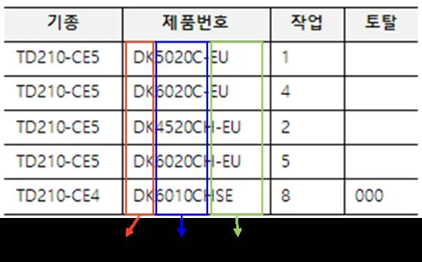
4-3-2. (혁신전략 HOW) 모듈화 및 혼류생산방식대동은 트랙터 생산 과정에서 모듈화를 중심으로 한 혼류생산방식을 도입하였다. 트랙터를 구성하는 주요 부품 및 시스템을 모듈 단위로 분리하여 설계한후, 각 모듈이 상호 교환 가능하도록 표준화하였다. 대동의 공정은 크게 실린더공정 - 엔진공정 – 차량공정으로 구분될 수 있다[34]. 주물로 만든 엔진 몸체인 ‘실린더 블록’을 라인에 올리면 작업자들은 피스톤과 기어 케이스, 크랭크샤프트등을 차례로 붙여 조립한다. 이후, 엔진 하나를 완성하기 위해 50개 이상의 공정을 수행한다. 이 때 엔진에 들어가는 부품 및 모듈은 계열사인 대동기어, 대동금속 등을 포함해 여러 협력사에서 조달한다. 완성된 엔진이 본공장으로 옮겨지면 본격적으로 차체 조립 공정을 거친다. 이 때 엔진에 미션 등 부품을 결합한 일종의 뼈대인 ‘파워트레인’이 도색 과정을 거치게 된다. 이어 연료탱크, 타이어, 메인 프레임 등과 결합하는 과정을 거친다.
모듈화는 동일한 생산 라인에서 다양한 모델의 트랙터를 생산할 수 있는 혼류생산방식을 가능하게 만들었다. 하나의 생산 라인에서 2개 이상의 제품을 동시에 생산하는 혼류생산방식은 생산성을 높이고 다품종 소량생산이라는 농기계산업의 특수성을 효과적으로 해결하였다[35]. 기존의 통합형 구조에서는 각 모
델별로 생산 라인을 독립적으로 운영해야 했던 반면, 대동의 모듈화 전략은 동일한 라인에서 다양한 모델을 조립할 수 있도록 하여 생산 유연성을 대폭 향상시켰다. 이는 대동이 고객의 다양한 요구를 충족하면서도 생산 단가를 낮추는데 기여하였다. <그림 27> 및 <그림 28>은 혼류생산 시스템의 실제 운영 방식을 시각적으로 보여줌으로써, 한 라인에서 얼마나 많은 품종이 생산 가능한지검토할 수 있다.
특히, 국가별 상이한 환경 규제 및 사용 조건에 대응하기 위해 대동은 동일제품도 엔진 및 배기 시스템을 모듈화하여 설계하고 생산 과정에 적용하였다.
이러한 방식의 모듈화는 국가별로 상이한 배출 기준을 준수하면서도 추가적인설계 변경 및 비용 발생을 최소화하였다. 이는 대동이 수출 중심의 사업 구조에서 지속적인 성장과 글로벌 시장 점유율 확대를 가능하게 한 주요 요인으로 작용하였다.
대동의 모듈러 아키텍처 전략은 일본의 KUBOTA와 비교했을 때 차별화를 확인할 수 있다. 대동은 폐쇄형 모듈화를 통해 부품 단위에서의 설계 유연성과 조립 효율성을 강화하는 반면, KUBOTA는 통합형(조율형) 아키텍처에 집중한다. 일본의 업체들은 모듈 생산을 최소화하여 모듈업체를 별도로 두지 않음으로써 자신의 통제를 유지하는 방식을 선호한다. 특히 KUBOTA의 경우 매일매일 결정된작업량에 따라 필요한 부품만 자동으로 분류돼 운반 로봇 등에 의해 자동으로공급되고 1차로 로봇이 조립한 후에 수작업으로 미세 조립을 하는 시스템으로농기계가 생산된다. 농기계 부품은 70% 정도는 외주 생산을 하고 나머지 핵심부품 30%는 자체적으로 생산하고 있으며 자체 생산 부품 대부분은 로봇에 의해 정밀가공 된다[36]. 이와 대조적으로 대동의 전략은 단순히 제품 생산의 효율성 증대에 그치지 않고, 모듈화 기반의 사업 확장성과 비용 절감을 동시에 달성한 혁신적 접근으로 평가할 수 있다.
■ 기종별 생산계획(20221. 07. 24.)
<그림27. 혼류생산방식 시스템 화면> <그림28. 기종별 생산계획(예시)>
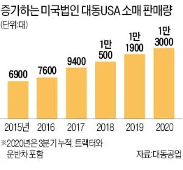
4-3-3. (혁신전략 결과) 다품종 소량생산방식 최적 생산 극대화
대동의 모듈러 아키텍처 전략과 혼류생산 방식은 다품종 소량생산 체계의 최적화를 이루는 데 기여하였다. 모듈화된 설계는 생산 공정의 효율성을 향상시키는 동시에, 다양한 제품군에 대한 고객 요구를 충족할 수 있는 유연성을 제공하였다. 특히 혼류생산 방식은 대동이 농기계 시장에서 경쟁력을 유지하고, 수출비중이 높은 환경에서 다양한 규제와 고객 요구에 대응할 수 있도록 하였다. 이를 통해 대동은 생산 단가 절감, 설계 및 조립 유연성 향상, 제품 다양성 확보라는 세 가지 목표를 동시에 달성하며, 글로벌 시장에서의 입지를 더욱 강화하였다. 실제 대동이 판매하고 있는 트랙터(2024. 6. 기준)는 국내 및 수출을 포함하여 16개 시리즈 92개 제품군이다. 하나의 시리즈당 평균 5개의 파생 모델 (Derived Models)을 보유하고 있는 것이다.
또한 모듈 생산 방식은 수리와 유지보수를 더 쉽게 만드는 장점이 있다. 모듈화 된 제품은 독립적인 부품 단위(모듈)로 설계되어, 교체가 용이하다. 예를 들어, 모듈로 분리된 엔진, 변속기, 제어 시스템 등이 고장 났을 때 전체 기계를해체할 필요 없이 해당 모듈만 교체하거나 수리할 수 있다. 또한 모듈 생산 방식은 유연한 기술이 숙련노동에 대한 의존을 최소화하는 방식으로 활용된다. 엔지니어 주도로 제품개발 및 공정기술이 도입·적용된 가운데, 작업조직은 인적요소에 의한 불량을 최소화하기 위해 단순화된다(김철식, 2011). 모듈화 기반으로 엔진을 만드는 과정은 자동화가 가능하며, 일일 60대의 엔진 생산이 가능한
엔진 라인에는 이를 관리하는 사람이 2~3명에 불과 하다. 이러한 방식은 일본적 생산방식과 두드러지는 차이점이다. 일본에서는 현장 작업자 중심의 혁신에근거하여 직접 생산자의 숙련을 활용한 기능적 유연성을 추구한다. 생산노동자들의 능동적 참여를 전제로 작업조직이 구성되며(Lazonick, 1990; 윤진호·주무현, 2001), 여기에서 숙련 노동자들은 현장의 문제해결(problem solving)에서 핵심적역할을 수행한다(Aoki, 1988; 조성재 외, 2007). 또한, 노동자들이 여러 직무를 이동할 수 있도록 다기능화가 이뤄진다. 기업 간 관계에서는 하청 ‘계열(Keiretsu)’ 을 중심으로 장기적 협력 네트워크를 구축한 가운데 부품업체의 역량을 활용한제품개발과 혁신이 이뤄진다는 것이다(홍장표, 2001).
구분 대동 생산방식 일본적 생산방식
기업간 관계 모기업 중심의 종속적 네트워크 계열 조직의 협력적 네트워크
모듈화 방식 대단위 모듈화 소단위 모듈화
주도 업체 모듈업체 주도 완성차 업체의 주도
모듈 판매 여부 자가 구매 가능(순정품) 자가 구매 불가(대리점 수리)
강점 다양한 요구에 유연하게 대응 가능 고품질 제품 유지 가능
약점 상대적으로 약한 내구성 높은 서비스 및 수리비용
<표15. 대동과 일본적 생산방식의 차이(김철식, 2011 참고하여 본인 재작성)>
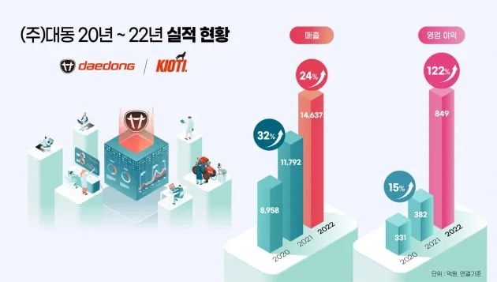
이와 관련하여 KUBOTA와 다르게 대동 공식홈페이지에는 제품 관리 및 자가점검을 안내해주는 카테고리가 존재한다. 해당 매뉴에는 “순정품 안내”가 존재하는데, 전국 8개의 지역 부품 총판 및 150개 대리점에만 공급되는, 대동 농기계만을 위해 탄생한 고품질 부품을 판매하며, 대리점 뿐 아니라 실제 고객이 온라인 쇼핑몰에서 스스로 부품을 사서 고칠 수 있다. 고장이 나면 우선적으로 대리점에 수리를 맡겨야 하는 KUBOTA와 비교되는 영역이다.
4.4 니치 마켓 전략
4-4-1. (혁신전략 WHAT) “Hobby Farm” 시장 집중대동은 북미 농기계 시장에서 기존의 대형 농기계 제조업체들이 상대적으로주목하지 않았던 Hobby Farm 시장에 집중하여 북미 시장을 장악하였다. 미국에서 대부분의 농업은 상업적 농업(commercial farming)으로 대규모 생산을 목적으로 했다. 이와는 달리 Hobby Farm 시장은 소규모 농장을 운영하거나 농업을취미로 즐기는 인구를 대상으로 하며, 최근 북미 지역에서 이러한 시장이 지속적으로 확대되고 있다.
Hobby Farm 시장의 소비자들은 대형 농기계보다는 사용이 간편하고 합리적인 가격의 소형 농기계를 선호하는 경향이 있다. 특히 북미의 트랙터에 대한 활용은 한국에서의 전통적인 농업용도의 활용을 넘어서는데, 정원관리 및 조경, 소규모 목축, 제설 작업, 소규모 운반 및 건설, 커뮤니티 활동까지 활용한다. 대동은 이러한 시장 공백을 기회로 포착하여, 소형 트랙터 및 가성비 중심의 제품군을 통해 새로운 수요를 창출하고 경쟁이 없는 시장으로 자리매김하였다[37].
이와는 대조적으로 경쟁사인 John Deere와 Kubota는 마력 수치가 큰 대형농기계 및 고가 모델에 집중하며 이러한 소비자층의 세부적인 요구를 충분히반영하지 못하였다. 대동의 전략은 특정 고객을 타겟으로 하는 “니치 마켓 전략”을 바탕으로 이미 경쟁이 치열한 농기계 산업의 틈새를 파고들어 경쟁사와차별화된 시장 입지를 구축했다고 볼 수 있다.
4-4-2. (혁신전략 HOW) “KIOTI” 브랜드 인지도 기반 가성비 전략
COVID-19가 발생했을 때, 대동은 오히려 이를 북미 시장의 기회요인으로 보았다. 코로나로 인해 자택 체류 시간이 증가하면서 이미 트렌드로 잡아 가고 있던 탈도심화, 재택근무, 전원농장을 운영하는 하비 파머(Hobby farmer)가 더 빠르게 확대될 것이라고 예상하고, 북미 시장 주력 브랜드인 “KIOTI”를 중심으로한 소형 트랙터 및 다양한 농기계 제품군을 제공하며, 사용자 친화적인 제품으로 소비자들에게 긍정적인 반응을 얻었다. 대동이 Hobby Farm 시장에서 점유율을 높일 수 있었던 방법에 대하여 “니치 마켓 전략”의 관점에서 분석해보고자한다.
1) 진입 시장 및 시장 규모: 하비 파머(Hobby Farmer) 시장
실제 Hobby Farm은 1970년대와 1980년대 초, 제2차 세계대전 이후 미국에서 50에이커 미만의 농장이 대규모로 증가한 데 기인한다(Thomas
L.D, 1986). 거의 모든 선진국에서는 농지 보존을 목표로 하는 정책을 채택하고 있는데(OECD, 1979; Bryant et al. , 1952), 이 중 소규모 농장의 약 38% 는 농업이 주 직업이 아닌 Hobby Farm의 성격을 가진다고 할 수 있다. 미국 USDA 통계자료(2021년) 기준으로, Hobby Farm 시장의 매출은 농업 시장의 20% 미만을 차지하는 것으로 추산할 수 있다.
2) 전략 방향: 소형 트랙터 중심 라인업 전개
대동은 북미 시장에서 농장과 주택 등의 농업과 시설 관리용으로 사용
되는 50마력 이하의 트랙터 모델 35개 중심으로 고객의 다양한 니즈를 고
려한 제품 라인업을 구축했다[18].
3) 차별화의 방식(Kotler, 1999)
1. 우수한 성능
① 소비자 맞춤형 제품 개발
대동은 Hobby Farm 소비자들의 요구에 맞춰 에어컨 설치, 쉽고 편한 조
작이 가능하도록 UI/UX 개선, 농업 통합 솔루션 제공 등 소비자 맞춤형
제품 업그레이드를 통해 고객 중심의 가치를 창출하였다. 또한, 소비자가
제품 활용도를 높일 수 있도록 전용 애플리케이션을 개발하여 제품 관리
와 사용 편의성을 강화하였다.
② 가성비 모델 라인업
대동은 소형 트랙터를 포함한 제품군에서 경쟁사 대비 합리적인 가격과
우수한 품질을 제공하여, Hobby Farm 시장의 주요 소비자층이 쉽게 접근
할 수 있도록 하였다. 이를 통해 대동은 경쟁사 제품 대비 높은 비용 효율
성을 강조하며 차별화된 입지를 구축하였다. 실제 미국 시장에서 소형 트
랙터로 경쟁하고 있는 대동(KIOTI)과 구보다(KUOTA)의 인기 모델 가격을
비교하면 KIOTI CK 2610 HST 기준 약 $17,000~$19,000인 반면, KUBOTA L2501 HST 기준 약 $19,000~$21,000으로 판매되고 있다.
2. 정시 납품
대동은 2021년 기준 전체 매출의 약 65%가 해외 수출로 발생했다. 북
미, 유럽, 오세아니아가 핵심 거점 시장으로 이중에서도 북미 수출이 가장
크다. 2020년 초 코로나 팬데믹이 발생하면서 글로벌 경기 침체를 우려해
북미 시장에서의 글로벌 농기계 기업들은 생산 물량을 축소하거나 또는
공장 셧다운으로 제품 적기 공급의 어려움을 겪었다. 반면 대동은 코로나
로 인한 자택 체류 시간이 증가하면서 이미 트렌드로 자리 잡아 가고 있
던 하비파머(Hobby farmer)가 더 빠르게 확대될 것으로 예상하고 이를 기회라 생각해 생산을 늘리고 공격적인 영업 마케팅을 전개함으로써 폭발적
인 수요에 정시 납품할 수 있었다.
3. 직접적이고 정기적으로 접촉하는 방식
① 공격적인 마케팅
대동은 자사의 수출 브랜드 ‘카이오티(KIOTI)’의 북미 현지 시장에서의 브
랜드 파워를 강화하기 위해 류현진 선수가 소속된 토론토 블루제이스의
홈구장에 브랜드 광고를 집행하는 메이저리그 마케팅을 시행했다. 국내 농
기계업체로서 야구장 광고는 최초이다. "We Dig Dirt"와 같은 독창적인 광고 캠페인을 통해 소비자와의 접점을 확대하였다.
② 딜러 네트워크 활성화
대동은 북미 전역의 딜러 네트워크를 활용하여 제품 접근성을 강화하고,
소비자와의 직접적인 소통을 확대하였다. 딜러 네트워크는 제품 판매뿐만
아니라 애프터서비스(AS) 제공을 통해 소비자 만족도를 높이는 데 중요한
역할을 했다. 현재 미국 캐나다에 약 480여개의 딜러를 두고, 100마력 미
만 트랙터를 주력으로 사업을 영위하고 있다. 코로나로 대면 교육 시행이
쉽지 않은 상황에서 제품/기술/서비스 교육을 위한 영상 콘텐츠 중심의
디지털 채널을 운영해 카이오티 제품을 판매하는 북미 딜러들의 영업 및
서비스 역량을 지속 강화해 나갔다.
4-4-3. (혁신전략 결과) 북미 시장 점유율 8.8%까지 달성대동의 니치마켓 전략은 Hobby Farm 시장에서의 성과로 이어졌다. 북미에서 100마력 미만 트랙터 시장은 10% 이상씩 성장했다. 특히 대동의 트랙터 및 운반차 소매 판매량은 2020년 1만6600대에서 2021년 2만2000대로 전년비 32% 증가했다. 이에 2022년 대동의 북미 시장 점유율은 8.8%로 성장하였으며, 북미시장에서의 연결 매출은 8,321억 원으로, 2020년 대비 약 2배 가까이 증가하였다. 이러한 성과는 기존 대형 농기계 제조업체들이 주목하지 않았던 시장에서대동이 틈새시장을 공략하여 타겟 고객의 니즈를 정조준한 결과로 평가된다.
<그림29. 미국법인 대동USA 판매량 추이[38]> <그림30. ㈜대동 20년 ~ 22년 실적 현황[39]>
또한, 대동의 북미 주력 브랜드인 KIOTI는 2021년 북미 소비자 조사에서 소형 트랙터 구매 시 고려하는 브랜드 중 3위를 기록하며 소비자들에게 높은 인지도를 얻었다. 이는 대동의 차별화된 마케팅 전략과 가성비 중심의 제품 전략이 소비자들에게 효과적으로 어필되었음을 보여준다.
대동이 Hobby Farm이라는 틈새 시장으로 진출한 방식은 기존 농기계 경쟁사들이 활용하지 않았던 소비자 맞춤형 제품 개발 및 마케팅 전략 등을 결합하여경쟁자가 제공하지 못했던 가치를 제공하는 사례로 자리매김하고 있다. 이를 통해 대동은 단순히 북미 농기계 시장에서의 성공을 넘어, 글로벌 시장에서의 성장 가능성을 확장하고 있다.
제5장. 결론
5-1. 결론 및 시사점
(주)대동의 혁신 전략은 다음 네 가지로 요약할 수 있다. 첫째, 선진 기업과의
기술제휴를 통해 신규 기술을 확보하고, 이를 내재화(국산화)하며 기술적 역량을 강화하였다. 둘째, 수직계열화를 통해 폐쇄-통합형 산업 내 기술 역량을 극대화하였다. 셋째, 아키텍처 혁신을 기반으로 모듈화를 통해 다품종 소량생산체계를 구축하였다. 넷째, 이러한 기술 역량을 바탕으로 틈새 시장을 공략하며해외 시장에서도 기술력을 인정받는 데 성공하였다.
특히 대동의 사례가 유의미한 이유는 내수시장 규모의 한계를 극복하기 위해처음부터 사업을 다각화하기보다는, 농기계에 집중하여 연구개발이라는 핵심 역량을 강화하며 성장의 돌파구를 찾은 점이다. 이는 우리나라 중소·중견 제조기업들이 본연의 핵심 역량에 집중하면서도 안정적인 성장을 이룰 수 있는 혁신전략의 본보기가 될 수 있다.
특히, 대동의 성공은 농기계 산업을 넘어 한국 제조업 전반의 자생적 성장과혁신 모델로 자리잡을 가능성을 보여준다. 제조업 중심 국가로서의 한국은 한개의 단일 산업의 성공이 아닌 균형 발전을 통해 국가 성장에 기여할 필요가있는데, 국가 차원에서 중소기업의 혁신과 균형 성장을 지원하는 데 중요한 시사점을 제공한다.
반면, 시대적 상황에 따라 자동차 산업으로 확장을 제안받았을 때, 대동이 농기계라는 한정된 시장에 집중한 점은 한계로 평가될 수 있다. 그러나 농업의 중요성 및 농기계 산업의 특수성을 감안할 때, 대동의 전략은 단순한 시장 규모에대한 평가를 넘어, 국가 전략적 관점에서 중요한 의의를 갖는다.
마지막으로 대동의 사례는 중소기업이 지속적인 연구개발을 통해 특허 기반전유성을 확보하고, 독자적인 비즈니스 모델 및 생산방식을 구축하여 세계 시장에서 틈새 시장을 공략한 혁신 사례로 자리 잡을 수 있다. 더 나아가, 농기계시장에서의 성공 패턴을 바탕으로 스마트 모빌리티, 스마트 팜 등 연관 사업으로 확장하며, 기존의 국산화-모듈화-틈새시장 공략을 성공적으로 반복 적용하고있다는 점에서 높은 평가를 할 수 있다.
5-2. 해당 연구의 한계 및 향후 연구 방향
본 연구는 (주)대동의 과거 혁신 전략에 초점을 맞추어 진행된 만큼 개인적 – 기업적 – 제도적인 차원에서 다음과 같은 한계를 갖는다.
개인적 차원의 관점에서 바라본 향후 연구 방향은, 소속 기관인 정부출연 연구기관의 시야로 중소·중견기업의 혁신을 돕기 위한 실질적 지원 방안을 모색하는 것이다. 예를 들어, 정부 정책 및 기술 개발 지원이 농기계 산업에 미치는효과를 분석하고, 이를 농기계 산업의 성장 전략에 적용할 방안을 구체화할 수있다.
기업적 차원의 관점에서 첫째, 내부 자료의 제한으로 인해 정량적 분석이 부족하여 정성적 분석에 의존할 수밖에 없었고, 둘째, 과거 혁신 사례에 집중한연구로 인해 현재 진행 중인 혁신 전략과 그 결과에 대해 분석하기에는 시간이더 필요하다는 점이다. 이는 대동의 혁신 전략이 국내외 시장에 미칠 영향을 실질적으로 분석하는 연구 주제를 바탕으로, 축적된 데이터 수집 및 정량적 분석을 포함한 후속 연구를 통하여, 기업 차원의 혁신 전략을 지속적으로 업데이트할 필요성을 갖는다.
제도적 차원의 관점에서 해당 연구를 통해 농업 및 농기계 산업의 중요성을확인하였으나, 선진국 대비 국가 통합적 연구 개발 및 제도적 지원책이 미비하다는 한계점을 발견하게 되었다. 특히 엔진, 자율주행 등 핵심 기술요소 개발은개별 기업 단위가 아니라 국가적 차원의 논의가 필요한 영역임에도 불구하고, 이러한 지원이 충분히 이루어지지 않는다는 점에서 개선 방향을 확인하였다. 이에, 국가적 차원에서 혁신에 성공한 산업 부문을 농기계에 확장 적용하는 추가연구를 수행 할 수 있다. 특히 농기계 산업이 자동차 산업과 유사하지만 발전속도가 상대적으로 느리다는 점에 착안(충남대학교 김용주교수, 인터뷰, 2024.) 하여, 성공적인 자동차 산업의 전략을 농기계 산업에 도입함으로써 혁신과 성장을 가속화할 가능성을 모색할 필요가 있다. 국가적 차원의 정책적 지원과 기술개발을 기반으로 한 후속 연구는 농기계 산업뿐만 아니라 제조업 전반의 혁신과 글로벌 경쟁력 강화에 기여할 수 있을 것이다.
Reference
[1] 송경호, 한국 제조업의 생산성 성장과 산업 역동성, 현안분석2, 36- 55쪽, 2022년 1월.
[2] 연합뉴스. (2021, 3월 14일). 코로나 속에서도 선방…한국 GDP OECD 9위·IMF 10위 유지. 연합뉴스.
https://www.yna.co.kr/view/AKR20210314033200002 [3] 한국기계산업진흥회, 기계산업의 현황과 위상 통계자료 [4] 중소기업뉴스. (2023, 11월 14일). 국내 농업기계산업 시장규모 6조원 육박. 중소기업뉴스.
https://www.kbiznews.co.kr/news/articleView.html?idxno=97542 [5] 류성원, 박주형, 농기계 산업 글로벌 동향과 한국의 과제, 전국경제인연합회, Global Insight, 98호, 2023년 1월.
[6] 이운규, 박주형, 박상진, 글로벌 농기계산업 동향 분석, 한국기계연구원, 기계기술정책, 98호, 2020년 2월.
[7] 박근석, 김용주, 최서진, 스마트농업 구현을 위한 농기계 기술, 한국산업기술기획평가원, 12월호 3, 2023년 12월.
[8] 농업기계연감 2023, 한국농기계공업협동조합, 한국농업기계학회, 2023년.
[9] 각 사 사업보고서 기준 재구성, DART 전자공시시스템, 2023년.
[10] 박대식, 김정호, 농업·농촌의 역할에 관한 국민의식 조사연구, 한국농촌경제연구원, 1999년.
[11] 김동훈, 박혜진, 2022년 농업농촌 국민의식 조사, KREI 농정포커스, 2023년.
[12] 이중용, 서대석, 미래의 기술 발전과 농업혁신, 한국농촌경제연구원, 2017년.
[13] 후지하라 타츠시, 트랙터의 세계사, 팜커뮤니케이션, 서울, 2018.
[14] 강영선, 트랙터 개요(강의자료), 충남대학교, 2024.
[15] 한국신용평가 보고서 발췌분, 재인용.
[16] 대동 사업보고서, DART 전자공시시스템, 2023년.
[17] 대동공업주식회사, 『대동50년사』 , 1997년.
[18] 대동 홈페이지 https://ko.daedong.co.kr/ [19] 이근, 박태영 외, 산업의 추격, 추월 추락(산업주도권과 추격사이클), 21세기북스, 서울, 2014.
[20] Kim, L. (1980). Stages of development of industrial technology in a developing country: a model. Research policy, 9(3), 254-277. [21] Lee, J., Bae, Z. T., & Choi, D. K. (1988). Technology development processes: a model for a developing country with a global perspective. R&D Management, 18(3), 235-250.
[22] 후지모토 다카히로 저, 박정규 역, 모노즈쿠리-일본의 제조업 전략, 후지모토 다카히로, 아카디아, 서울, 2012.
[23] Ulrich, K. (1995). The role of product architecture in the manufacturing firm. Research policy, 24(3), 419-440. [24] Fujimoto, T. (2007). Architecture-based comparative advantage—a design information view of manufacturing. Evolutionary and Institutional Economics Review, 4, 55-112.
[25] Parrish, E. D., Cassill, N. L., & Oxenham, W. (2006). Niche market strategy for a mature marketplace. Marketing Intelligence & Planning, 24(7), 694-707.
[26] 김위찬, 르네 마보안, 강혜구 역, 성공을 위한 미래전략 블루오션전략, 교보문고, 서울, 2005.
[27] 김삼만 저, 기공일생-김삼만 자서전, 정우사, 서울, 1976.
[28] 대동기어 홈페이지 https://www.daedonggear.com [29] 대동모빌리티 홈페이지 https://daedongmobility.co.kr/ [30] 대동금속 홈페이지 www.daedongmetals.co.kr/ [31] 하이드로텍 홈페이지 http://www.hydrotech.kr/ [32] DART 전자공시시스템 https://dart.fss.or.kr/ [33] 김철식, 조형제, 정준호. 모듈 생산과 현대차 생산방식: 현대모비스를 중심으로: 현대모비스를 중심으로. 경제와사회, 351-385. 2011년.
[34] 홍은주, 대동, 미래농업 추진을 위한 ERP 혁신, 삼성SDS 인사이트리포트, 2023.
https://www.samsungsds.com/kr/insights/daedong_case_study.html [35] 대동 히든챔피언(대동 홍보영상).
https://www.youtube.com/watch?v=-4NYXBCb1BQ [36] 한국농어민신문. (2003, 1월 23일), 중소형 트랙터 ‘1인자’ 일본 구보다 농기계를 가다, 한국농어민신문.
http://www.agrinet.co.kr/news/articleView.html?idxno=17649 [37] 한국경제. (2022, 6월 26일), ‘하비 파머(Hobby Farmer) 빠른 증가’ 에 베팅, 한경.
https://www.hankyung.com/article/202206243825i [38] 한국경제. (2020, 12월 2일), 중소형 트랙터로 북미시장 뚫은 대동공업…유럽서 영업망 확대 시동, 한경.
https://www.hankyung.com/article/2020120236191 [39] 영농자재신문. (2023, 2월 17일), 대동, 2년 연속 최대 실적... 올해미래사업 현실화, 영농자재신문 http://newsfm.kr/mobile/article.html?no=7690 [40] 최홍봉, 현대자동차의 기술추격 전략 : 도요타자동차와의 비교를중심으로, 지역사회연구, 제17권 제1호, 2006년.
[41] 조성재. 추격의 완성과 탈추격 과제: 현대자동차그룹사례 분석. 동향과 전망, (91), 136-168. 2014년.
[42] 강경수, & 옥주영. 21 세기 현대자동차의 공급사슬 구축 사례 연구. 한국생산관리학회지, 26(3), 285-303. 2015년.
[43] 조형제, 김철식. 모듈화를 통한 부품업체 관계의 전환: 현대자동차의 사례: 현대자동차의 사례. 한국사회학, 47(1), 149-184. 2013.